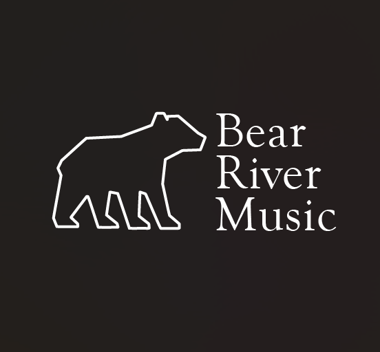
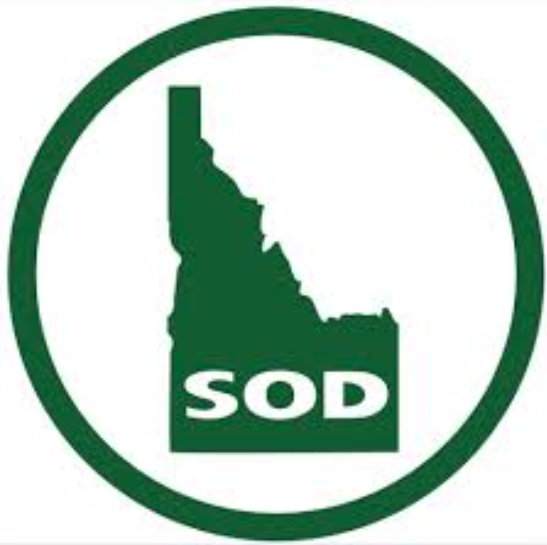
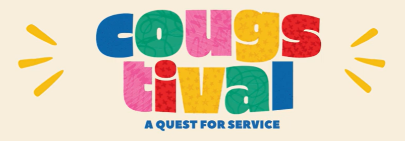
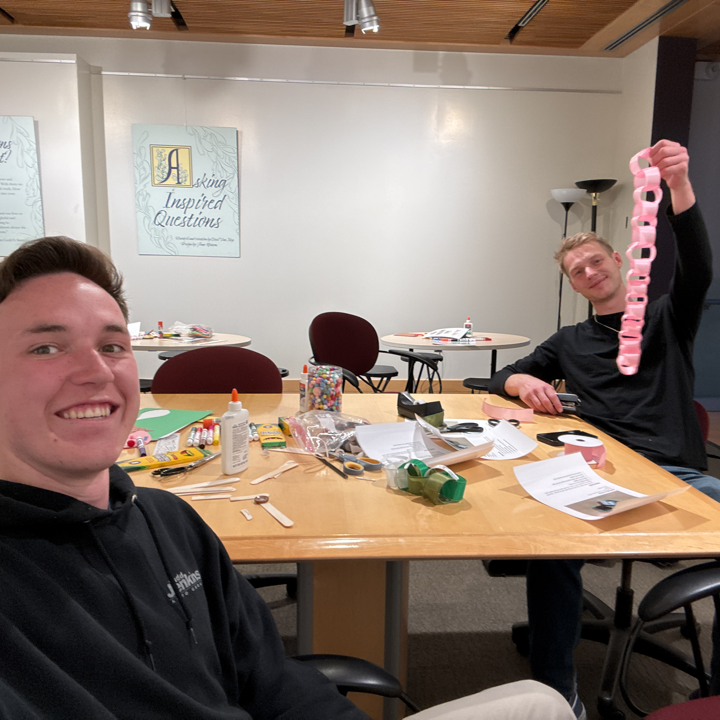
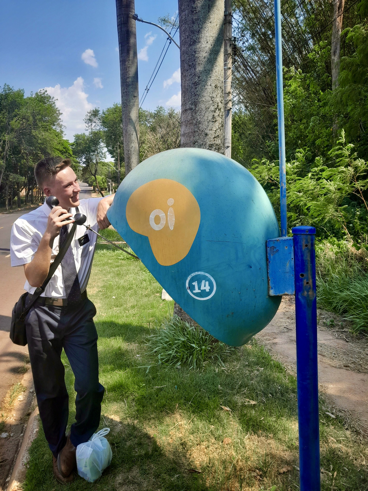
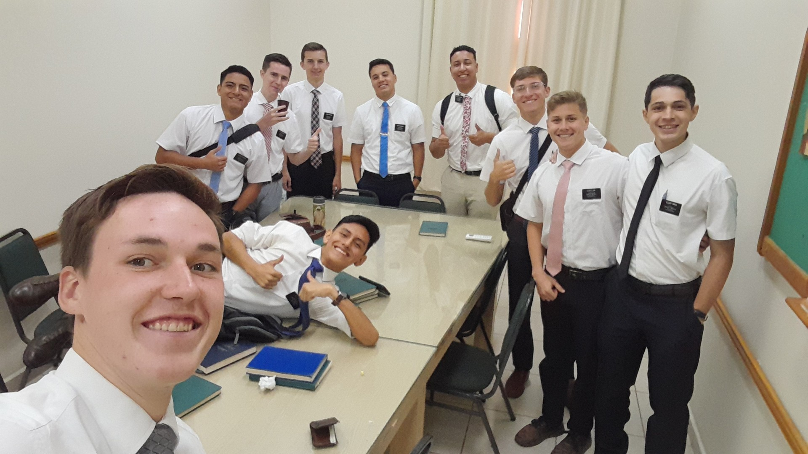

Education
Brigham Young University— Marriott School of Business Provo, Utah
Bachelor of Science - Pre-business (Intended Accounting Major)
Experience

Founder & Piano Technician
Bear River Music LLC | Idaho Falls, Idaho
- Handled detailed bookkeeping, expense tracking, and invoicing for all business transactions using Microsoft Excel. Built and grew a piano-tuning business through targeted outreach, SEO, and referral networks, resulting in a 200% increase in sales every quarter.
- Managed day-to-day business operations, including scheduling, customer service, and client retention, while delivering professional support through both phone and in-person interactions. Performed professional piano tuning, cleaning, and minor repairs for residential clients.
Door to Door Sales Representative (full-time, seasonal)
Greenix Pest Control | Philadelphia, Pennsylvania
- Engaged with 50–100+ customers daily in a high-volume sales environment. Developed persuasive communication and objection-handling skills.

Farm Hand - Equipment & Field Operations
Agriwest & Idaho Sod Inc | Iona, Idaho
- Operated tractors, loaders, and other machinery for sod, grain, and alfalfa production. Performed routine equipment maintenance and general mechanical troubleshooting on 5+ types of agricultural machinery.
- Carried out manual labor in varying weather conditions such as harvesting, baling, irrigation setup, and field preparation with teams of 2-4 people. Functioned with minimal supervision while maintaining safety standards.
Skills
Excel
- Built financial reports for Bear River Music
- Automated workflows using formulas, data validation, and VBA
- Created organized databases for client and project management
Data Analysis
- Interpreted operational and financial data to support decision-making
- Built dashboards and visualizations for clarity and insights
- Identified trends and patterns to improve workflows
Customer Relations
- Clear communication
- Relationship building
- Client education
- Handling difficult interactions
Portuguese
- Fluent speaking, reading, and writing
- Used daily in cross-cultural teaching and communication
- Navigate complex conversations with clarity and empathy
Volunteer Experience
BYU Student Alumni Association — Week of Service
Campus Relations Coordinator | Provo, Utah
Sep 2025 - Dec 2025


- Collaborated with a team of 8 volunteers to plan and execute a week-long campus service initiative involving 750+ students & alumni
- Coordinated with leaders from 40 different campus organizations to design and implement service opportunities
- Facilitated communication and alignment across all participating groups
The Church of Jesus Christ of Latter-day Saints
Volunteer Representative (full-time) | Cuiabá, Mato Grosso, Brazil
Oct 2022 - Oct 2024


- Led community outreach efforts and taught individuals in Portuguese
- Trained and developed teams of 10–20 volunteers, offering feedback, instruction, and support to help meet weekly goals